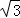
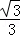
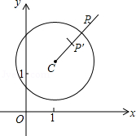
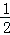
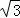
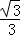
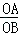
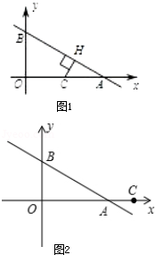

2015年北京市中考数学试题 · 数学解答题 第29题 · 对应解析
29．（8分）（2015•北京）在平面直角坐标系xOy中，⊙C的半径为r，P是与圆心C不重合的点，点P关于⊙C的反称点的定义如下：若在射线CP上存在一点P′，满足CP+CP′=2r，则称P′为点P关于⊙C的反称点，如图为点P及其关于⊙C的反称点P′的示意图．
特别地，当点P′与圆心C重合时，规定CP′=0．
（1）当⊙O的半径为1时．
①分别判断点M（2，1），N（，0），T（1，

）关于⊙O的反称点是否存在？若存在，求其坐标；②点P在直线y=﹣x+2上，若点P关于⊙O的反称点P′存在，且点P′不在x轴上，求点P的横坐标的取值范围；
（2）⊙C的圆心在x轴上，半径为1，直线y=﹣

x+2与x轴、y轴分别交于点A，B，若线段AB上存在点P，使得点P关于⊙C的反称点P′在⊙C的内部，求圆心C的横坐标的取值范围．
【解答】解：（1）当⊙O的半径为1时．
①点M（2，1）关于⊙O的反称点不存在；
N（，0）关于⊙O的反称点存在，反称点N′（

，0）；T（1，

）关于⊙O的反称点存在，反称点T′（0，0）；②∵OP≤2r=2，OP2≤4，设P（x，﹣x+2），
∴OP2=x2+（﹣x+2）2=2x2﹣4x+4≤4，
∴2x2﹣4x≤0，
x（x﹣2）≤0，
∴0≤x≤2．
当x=2时，P（2，0），P′（0，0）不符合题意；
当x=0时，P（0，2），P′（0，0）不符合题意；
∴0＜x＜2；
（2）∵直线y=﹣

x+2与x轴、y轴分别交于点A，B，∴A（6，0），B（0，2），
∴

=，∴∠OBA=60°，∠OAB=30°．
设C（x，0）．
①当C在OA上时，作CH⊥AB于H，则CH≤CP≤2r=2，
所以AC≤2，
C点横坐标x≥2（当x=2时，C点坐标（2，0），H点的反称点H′（2，0）在圆的内部）；
②当C在A点右侧时，C到线段AB的距离为AC长，AC最大值为2，
所以C点横坐标x≤8．
综上所述，圆心C的横坐标的取值范围是2≤x≤8．
